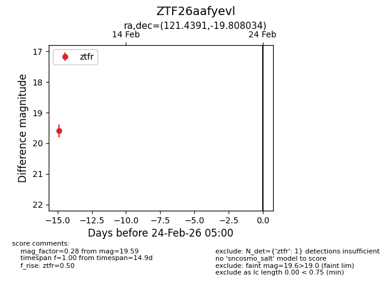
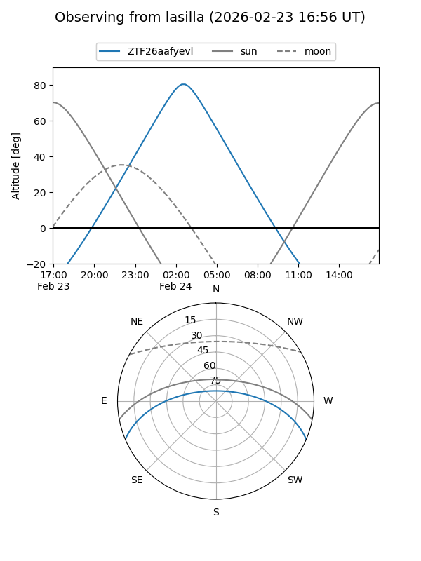
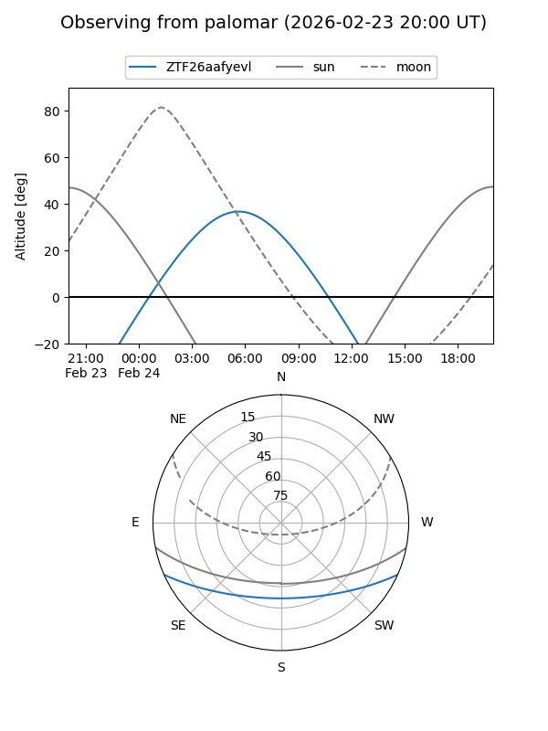

ZTF26aafyevl
Target ZTF26aafyevl at 2026-02-24 09:08
Aliases and brokers:
FINK: link
Lasair: link
ALeRCE: link
alt names
ZTF26aafyevl (ztf,fink_ztf)
Coordinates:
equatorial (ra, dec) = 121.4391,-19.80803
equatorial (HMS+DMS) = 08:05:45.39,-19:48:28.92
galactic (l, b) = (239.1041,+6.44638)
Flags:
Photometry:
last ztfr=19.59
1 ztfr detections
Lightcurve

Visibility


Additional plots